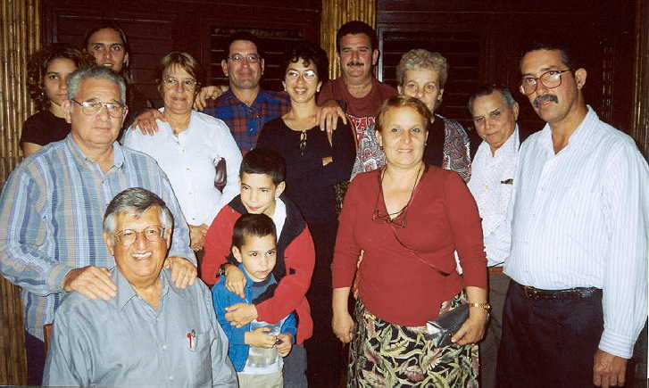
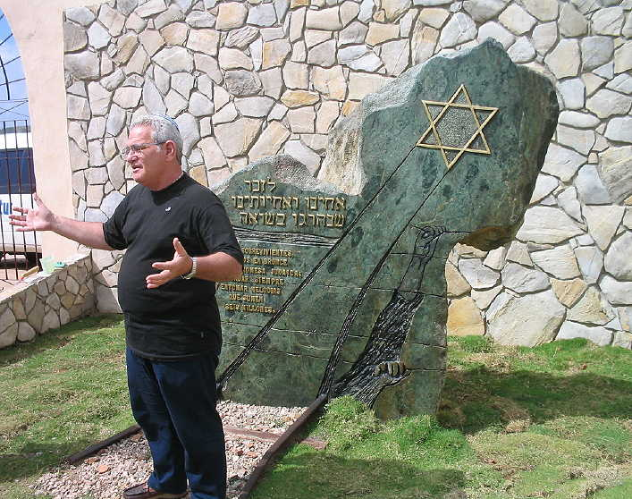
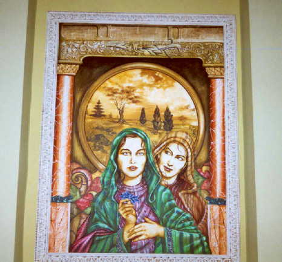
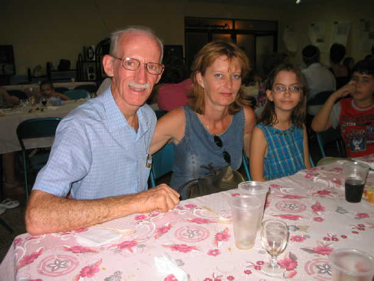

Cuba
Judaica
Five
pages of photographs with personal comments
|
Photos
3
|
(All photos copyrighted
by Richard Smith. No commercial or other use without permission
except by subjects of the photos and their families.)

Members of the Santa Clara community with a visiting Rabbi (lower left).
Alberto (back row with glasses) drove me through night-time Santa Clara on
his Russian motorcycle.

David Tacher Romano, President of the Santa Clara community,
discusses the meaning of the Holocaust Memorial at the Santa Clara cemetary.
Viri (right) wants to be a professional photographer but has limited access
to equipment.
Contact the jewishcuba.org webmaster if you would like to make a donation
of equipment or suppplies.

Whither thou goest. Artwork at the Hotel Raquel in Havana, which has Jewish
themes
throughout the hotel.

My friend Simon and some members of his family enjoy a Shabbat meal at the
Patronato.
|
Photos
3
|